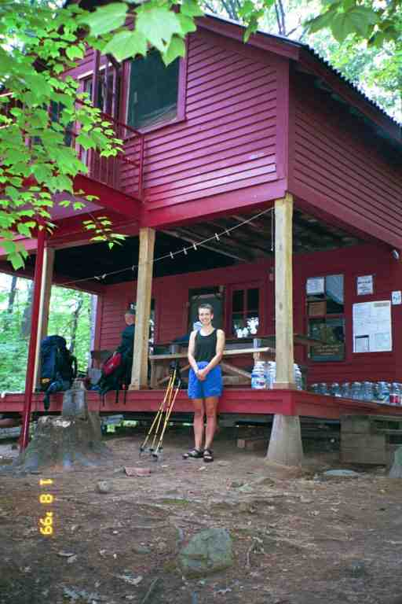
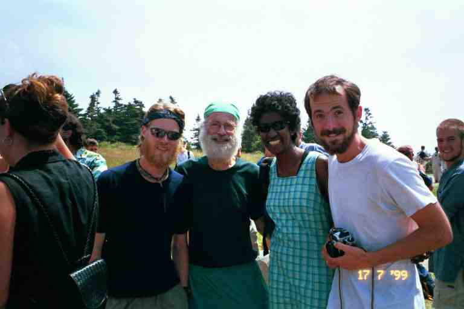

The story is now up to July 31 and we have been on the trail for 139 days. We sometimes start to wonder why we are still out here. As T-ROY said, it has become somewhat of a routine. We still enjoy the views and the people but we miss home and family and the grandkids and our friends. It seems that others are feeling the same kind of thing. SINGLEMALT says:
*** " I decided to take a "0" day because I have been feeling somewhat lethargic for a few weeks now, and I don't think it's entirely the heat.
I believe I have reached that stage of the trip where I have been out here a bit too long, and my momentum is slowing. No matter how determined you are, the trail finally starts taking its toll on you. The human body simply was not designed to carry a forty something pound pack up and down mountains for six months. I hope this feeling will go away, but I think I have reached a stage in my journey where sheer willpower will be even more important than ever to determine the outcome. It's not that I don't want to finish the trip, but I, like so many others, am tired and feel that we have been out here long enough. I do believe a blast of cooler weather would help a lot."*** (http://users.erols.com/johndsc/JournalPages/week20.htm)
Like SINGLEMALT, we also have been going on willpower and determination. Carrying a heavy pack for four and a half months can definitely start to wear a person out and perhaps contribute to other problems as will be seen in this segment. Despite the problems, I think the highlight of this segment should be the help or trail magic we received.
When we arose at Shaker campsite, we packed and left in record time, in order to avoid the mosquitoes. As promised, the mosquitoes became much less of a problem after Jerusalem road, which we crossed after about a mile. The walking that morning was over some boggy sections, across a number of roads, and 1000 feet up Baldy Mountain. Once up the mountain, the terrain levelled off a little and we came to a few wet spots, but there were few bugs. That day we were heading to the cabin at Upper Goose Pond where we hoped to get away from the heat. A short day would also help MA who was breaking in her new boots.
At about the 8.5 mile mark, we could see the pond below us as the trail began a short steep descent. We contoured the east end of the pond, crossed a small stream pouring into it, and then followed the bank on the north side for 0.5 miles. The trail then veered sharply to the right up a hill but we continued on around the pond for another 0.5 miles to the cabin.
What a gorgeous spot. The cabin is located about 50 feet from the water on a slight rise at the northwest corner of the pond. It is two stories with the second floor bunkhouse extending over the porch on the main floor. There is bunk space for about 30 people on the second floor. The main floor has a large dining living room in the front and a kitchen in the back. There are stairs both inside and outside at the front of the building. Hikers can use the propane stove but there is no electricity, so no refrigeration.
Nancy, the caretaker, soon arrived in a canoe with a number of gallon jugs that she had filled with water at the spring at the other end of the pond (note all the bottles of water in attached picture of Nancy in front of the cabin the next day - our backpacks are on the porch ready to go). The cabin belongs to the AMC who assign a different caretaker every week to take care of it. Nancy always takes the week of her birthday, July 27.

We chose bunks and had a bite to eat. We said goodbye to GALAHAD who was continuing on, and then walked down to the dock where we lay and relaxed. We got into the water to cool off and then I grabbed one of the noodles lying on the dock and swam with it out into the pond. One of the three cottages on the pond was near the cabin and beyond it was a narrow inlet connecting to the much larger Goose pond with its large cottage community. Power boats came through the inlet but the speed limit on Upper Goose pond is 5 mph. I had a long refreshing swim, or float. I came back to the dock and rested a little with MA.
I got into a conversation with a couple in their late thirties who were sitting quietly on the dock, enjoying the serenity and each others company. They were very nice and told me they had simply walked into the pond to spend the day. They told me the heart warming story of how they started dating not long before.
We were so impressed with this place that we considered coming back the following year for a week. It is a 1.6 mile hike here from the trail head, so there would be very few people, other than hikers. Making it more interesting is the cost: $3 per person for a bunk or $2 for a tent site, including a pancake breakfast.
We were not the only ones impressed. JILEBI writes:
*** ".... an enclosed cabin (i.e. no chance of being bitten) and the world's most beautiful pond. The water is crystal clear and as warm as blood. We are going to spend another night here. .....we swam (I dipped) and then canoed around the pond. The water was as still as glass and warm. It reflected the fluffy white clouds and the surrounding tree covered hills. We went down to the water again later to watch the moon reflect off the pond and light up the whole area like a black and white photograph." *** (http://trailplace.com/c99journals/315james/315james_index.html)
During the course of our stay, we mentioned that our son was flying from California to walk with us for a week, but that unfortunately we were unsure where we would be when he arrived at the Boston airport on August 21, and how he would get to us. Nancy said that she lived in Bethel Maine, near the NH border and would gladly pick him up at a bus station if he could get close to the trail. She said she would love to hike with us also. We made tentative plans and said we would call her when we had a more definite idea of our location.
After supper we did dishes out back using a weak bleach solution that was available. We met a southbounder who had been here a day or two trying to recover from an injury. We returned to the dock to relax before bed. During the evening a few other hikers arrived but we did not end up with more than 6 people.
This was the first place we encountered a composting toilet. We would see more of them in Vermont and in the White Mountains the following year. I will describe their operation in more detail another time. However, I will say now that they all have signs saying that they work best with very little liquid and that everyone should pee in the woods. Inside, they resemble any other outhouse except a bag of bark is provided, a handful of which is to be thrown down the hole before leaving, in order to help with the composting.
This particular privy had a feature that the others did not. There were two seats with a sign above each: #1 and #2. The seats were not numbered, but rather the signs referred to the purpose of each seat. Under seat # 1 was a metal screen and below that a wide metal funnel. A hose was attached to the funnel and stretched out into the woods behind the privy. A sign explained that #1 was to pee and that if a person made a mistake they had to use the scoop provided to transfer the contents.
The next morning, after pancakes and coffee, we hit the trail. The day was a little cooler and the hiking relatively easy. At the 1.2 mile mark we took the footbridges over the Massachusetts Turnpike and soon began the gradual climb up Beckett Mountain, our biggest climb of the day. The rest of the day consisted mostly of small dips and rises as we proceeded through October Mountain State Forest and contoured a watershed area.
There were wet spots here, necessitating DEET, but the bugs were not as bad as before. Early in the morning we went around Finerty Pond with its loud healthy bullfrog population. We caught up to STITCHES who had been joined by her brother in law. She was being slacked by her sister. We leap frogged them for some time. She later told us that her brother-in-law was amazed each time we passed them (imagine being passed by an older couple carrying big backpacks). We had a break with them at the October Mountain lean-to at the 9 mile mark and then continued on another 2 miles or so to Pittsfield road and the Cookie Lady's place.
The Cookie Lady lives on a blueberry farm across the road and 0.1 miles east of the trail. The house is set back from the road and we approached to fill our bags from the spigot next to the garage. Her husband came out and said she was not home but he gave us some of her home-made cookies. That is how she got her name. This couple also allows hikers to camp in the field behind their house and as well they provide a shuttle service and will accept and hold packages for thru hikers.
We sat in the shade next to an old building he used for his equipment and as an office for the farm. We talked for a while with STITCHES and a south bound section hiker. It was only 2 o'clock and we had done 11 miles. We were unsure whether to continue as it was 6.6 miles to the next shelter. The hiker said that the trail beyond was great and that we could easily do the 9.6 miles to Tom's place in Dalton. We had heard about Tom who let hikers tent in his yard or sleep on his front porch. The thought of town food seemed tempting to us and she said she really loved it there. So we got back on the trail. STITCHES was going to go tenting with her sister that night, after they picked some blueberries.
The hiker had been right about the terrain. It was mostly flat with a little ascent up Day mountain, near the end, and with a short steep descent into Dalton. The trail crossed railway tracks and a main street and then proceeded up Depot St. We walked up this typical tree lined residential street, looking for number 83, Tom Levardi's place. We found it difficult to believe that there would be a place to camp here.
We finally came to Tom's place and found four men (including GALAHAD) eating pizza at a picnic table in the side yard. GALAHAD introduced us to Tom and the two south bound thru hikers. Both Tom and GALAHAD gave us some of their pizza, and Tom brought us out some beer and pop. Later Tom asked MA and I if we wanted ice cream and of course we agreed. He brought us a tray with cookies and two bowls with big mounds of ice cream smothered with a ton of whipped topping, and covered with sprinkles. Boy, he is a great trail angel and he has been helping hikers for 16 years now. A few more southbounders soon showed up and ordered pizza.
There was no toilet here and Tom did not let hikers in his house, so we walked one block up and two blocks over, to the Cumberland Farms convenience store to use the washroom. Back at Tom's place we had to decide where to stay the night. We could camp on Tom's back lawn or sleep on his porch but the lack of a toilet was a major concern. There was a restaurant up the block which opened at 6 a.m. but this would not suit our overnight needs. PADDLER told me later that he talked with Tom when he was in Dalton, and found out that the town had refused to let him place a portapotty at the back of his property, even though the neighbours had agreed.
There was a small motel a few blocks away, so we decided to share a room with GALAHAD. Tom drove us to the motel. Also staying at the motel were Jacques D'Amboise (STEP BY STEP) and his son who were thru hiking southbound. Jacques was an older gentleman and had been getting lots of media coverage. He is a well known dancer and his itinerary included scheduled stops in many towns where he would teach a jig of some kind to large groups.
We got a small room with two double beds and the three of us managed to get comfortable. We all called home. MA's health problems first appeared that evening at the motel.
The next morning MA still was not feeling great and was taking Ibuprofen. We walked the few blocks to the restaurant at the top of Depot street. STEP BY STEP and his son were also having breakfast here. We then did a 1.5 mile road walk down a residential street, before climbing gradually up into the woods. At the top of the hill, we walked through a hemlock and deciduous forest across the top of the mountain for about 5 miles, arriving at The Cobbles, an outcropping of cobble marble giving a view of the valley below, the town of Cheshire and Mt. Greylock.
The trail went down into Cheshire where we decided to stop and try to get medical attention for MA. We stopped for a moment at the Cheese Monument which commemorates a big cheese that was given to Thomas Jefferson. The trail turned down a side street but we continued on a half block to the hostel at St. Mary of the Assumption Church. The parish permits hikers to sleep in the church hall situated behind the church off the back parking lot. The hall has a tile floor and the only amenity is a washroom.
After leaving our packs in the hostel, we rang the bell at the rectory but there was no answer. There was no grocery store here and the map in the Companion only showed one restaurant which turned out to be closed on Mondays. It also mentioned that a convenience store sold deli sandwiches, but it no longer did. The store directed us however to a restaurant that turned out to be a mile from the church. On the way back to the church we replenished our snacks at a small store.
We rested the remainder of the afternoon and I checked at the rectory once in a while. Around 5 pm, I found a man, who I presumed was the priest, reading in a lawn chair next to the rectory. I asked if there was a doctor or medical clinic in town. He said that the closest one was in Pittsfield. I went back to tell MA. He then appeared and apologized, saying he had finally realized that we had no vehicle.
Father David drove us the 20 miles or so to the Hospital and waited with us for over three hours in the emergency room. MA got a prescription for medication including antibiotics and we then drove through Pittsfield to the only late night pharmacy. We then treated him to supper at the nearby Friendly's. We did not get back to the church until well past 11 pm. I should mention that we had not been able to shower before going to the hospital but had at least washed up in the sink.
What a wonderful trail angel for being so helpful to strangers. Father David is not the pastor at that church but was simply replacing for a few weeks. He is actually the chaplain at a hospital in Albany NY. We had wonderful conversations on a number of topics, including theology, and his candid comments certainly shattered some stereotypes in my mind.
During the night, we were woken by someone emerging from a small room at the end of the hall. We found out in the morning that it was an elderly couple who were section hiking south. They had run into problems and became worried but someone had picked them up and driven them here. I told them the trail motto was not to sweat the small stuff, everything always works out. Father David came in to see us before mass, and we said our final goodbyes and thank yous.
The trail took us through town, then across a field with waist high grass next to the community center, and then it crossed a highway and started climbing. It was a continual climb, as we rose 2500 feet to the top of Mount Greylock. The map shows that we actually went up the side of two other mountains on the way up. The walking was good, the incline was mostly gradual and we were on a path. We went in and out of woods as we climbed and we were now seeing spruce trees. Some of the clearings are boggy. When we came into the open, we would sometimes get glimpses of the summit. We were passed by three day hikers and then leapfrogged with them.
We finally got to the top around noon, 17 days after we had been here for the wedding. We ate lunch at a picnic table in the lodge's large enclosed porch, surrounded by tourists. We had a nice conversation with a couple whose son had done the trail 4 years before. The hiker box had nothing useful, containing the usual assortment of oatmeal and unidentified bags of dry soup. Before leaving, I called to reserve a room for that night at the Redwood Motel where we had stayed during our trip to the wedding
The hike down commenced with a search for the trail's path around the work being done to the tower and sidewalks. The descent consisted of a number of steep drops for the first 3.5 miles until Notch Road, the north road up the mountain. We went to Wilbur Clearing Lean-to where I had left a note to SMOKEY JOE and MOM and all our friends when we were here for the wedding. There was a great reply from MOM, updating us on her health and progress, as well as that of her son CHIEF NO PECS.
The trail then climbed a little before making a final drop of 2000 feet over a distance of 2 miles to North Adams where it proceeded a half mile along a residential street. We got off the trail, walking another half mile down the main street to the motel. It was a 14 mile day and MA was tired. We decided to vegetate in the motel because the inexpensive restaurants were too far to walk. I went to the supermarket across the street to get some supplies and to pick up something for supper from the deli counter and salad bar. I also bought myself a special treat: a two pound package of cheap white cream filled cookies. We don't buy these at home because I am addicted to them and tend to binge. That night I ate nearly half the package in front of the TV and started to get a sugar headache.
We walked to the Garage sub shop for breakfast, spent the morning in our room (I ate more cookies), and then returned there for lunch on our way back to the trail around noon. The trail crossed the Hoosic river on a pedestrian bridge and then we had a short road walk before going back into the woods and climbing 1800 feet to the Vermont border. It was hard to believe we were entering our 12th state and had less than 600 miles to our goal. The dark forest was lush and green and the ground was soft beneath our feet.
The 270 mile Long Trail begins at the Massachusetts-Vermont border and goes all the way to the Canadian border. It shares the same route as the Appalachian Trail for 104 miles, and then the AT goes east while the LT continues north. We would meet a number of Long Trail hikers over the next week or so.
We stopped for the night at Seth Warner shelter after a short 6.9 mile day. For the first time in a long time there was a crowd at the shelter. TOO OBTUSE was here and STITCHES arrived with another thru hiker named GRIZZWALDO (he is featured in an article about food on the AT in the latest issue of Outdoors magazine). A thru hiker name SMILEY was also here. It was our only meeting with the latter two.
There were also three Long Trail hikers here. One of them was hiking with a golf club and golf balls and intended to drive a ball off every mountain. I sure hoped there would be nobody down below. The other two were a rather odd couple (someone suggested they were perhaps high) but I will let STITCHES describe things: (http://friends.backcountry.net/m_factor/august1.html#1)
*** "There is an interesting fellow (not a thruhiker) here at the shelter, a man who is planning on making the outdoors part of his career. He supposedly has some backcountry experience but a few things made us wonder... he spilled boiling water all over... he was boiling water to purify it... he did not know to cover the pot while boiling the water. I cannot imagine where he would have gotten any experience and still made this many mistakes. " ***
The shelter was on a wide side trail 0.2 miles from the AT. I filtered water with TOO OBTUSE from a shallow source that crossed the side trail some distance beyond the shelter. The location left me with the impression that I was filtering water from a road or ditch. For supper we had the remainder of our subs from lunch and some fresh brownies that STITCHES obtained from two friends who had taken her to lunch when she got to North Adams. I also ate some more cookies.
The walking the next day was typical Vermont trail: a well maintained trail through lush green woods with gradual climbs and descents. One reason the climbs seemed gradual, is that the trail builders did not always want to bring hikers to the summit of mountain, preferring to bring us along the edge and sometimes even go between two mountains rather than over the top. At the 7.2 mile mark, we took a break at the Congdon Camp shelter. MA was not feeling well and was very tired. TOO OBTUSE was here and commented that she did not look well. We felt that the pain killers and antibiotics were likely tiring her out. We could have stayed here but it was only 11 a.m. and we felt it would be safer to be in a town. Vt 9 was 4.3 miles away and we could hitch into Bennington for the night.
It took us about two hours to get to the highway with a sharp 800 foot drop in the last half mile. We crossed the road, put our packs down next to the entrance to a large trailhead parking lot and stuck out our thumbs. There was very little traffic on this mountain road and we had no luck with the few vehicles that went by in the next half hour. We were getting worried. Then a lady called to us from the parking lot. She had just finished a day hike with her 5 year old son and offered to drive us to town. She drove us down the mountain to the Autumn Motel at the outskirts of Bennington VT. She gave us her name and phone number saying to call her if we if we needed help with regard to MA's health.
Once in our room, MA went right to bed. That night we had a great supper at the rather pricy motel restaurant. MA slept well that night but was still tired so we decided to stay another day. The next day we walked to town and had a late breakfast at a nice restaurant downtown. The decor was fancy and the menu tended towards the healthy, and contrasted with the plain looking restaurants in the south with their biscuits and gravy. However, the staff was nice and the food was good.
MA slept for most of that day. I was reading a book on the balcony outside the front door when the cleaning staff came by. I told them that MA was sleeping and to simply change the towels. One of the young women said that MA was sleeping soundly and I explained that we were hiking. I asked about getting a ride the next day and offered $5. She agreed. I went swimming in the motel pool and then bought us subs for supper.
MA slept most of the time we were there and felt much better the next morning. We were ready to go by 8 o'clock but the young woman was not around to give us a ride. We decided to leave anyway. The road was very narrow next to the motel so we walked a short distance before trying to catch a ride. Just then a door opened across the street and the young woman came out in her night gown and yelled that she was coming right away. She came out a few second later, still in her night gown and barefoot, got in her truck and drove over to pick us up. She drove us back to the trail and refused payment for the favour.
While I am on the topic of trail magic in Bennington I should quote from JILEBI's journal, about their stay here after a thunderstorm:
***"Walking in the newly moist woods was a treat. the decaying logs sending out wisps of steam and the black mud in the low lying areas were extra squelchy. the sun did dry out everything rather quickly. At Rte 9 we hitched a quick ride into town and just made it to the post office. I asked a clerk there if we could possibly camp out at the back of the post office. In the end the postmaster herself offered to take us to her home. Trail magic at it's most amazing best. It always seems to happen whenever we are in a bind. We spent a delightful evening (after a laundry and dinner stop in town) talking with this great lady like old friends. I'm so happy to be clean and have clean clothes."*** (http://trailplace.com/c99journals/315james/315james_index.html)
I have often quoted from JILEBI's journal in this story. I have attached a picture we took of her at the wedding a few weeks before. From left to right are KAYBEK (who we hiked with in Georgia), GREENFOOT (who we hiked with in NC and TN) and JILEBI and her husband RHUBARB (who we hiked with in TN and VA). We will be visiting JILEBI and RHUBARB during our trip to CA this October.

In the next segment, the hike starts to wind down as MA's health problems continue.